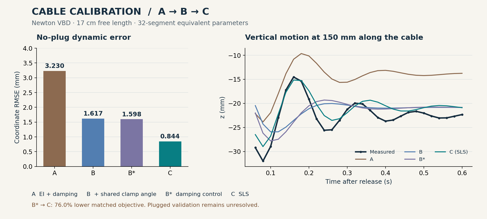

Fit material response
Optimizing EI and damping reduced error, but opposite static orientations traded off and dynamic maximum error remained above the limit.
A single calibration workflow connects evidence, simulation, search and validation. Follow the experiment from bending stiffness and damping, through clamp alignment, to a standard linear solid model.

rejected_validation. These are equivalent parameters for the specified model, not validated universal material constants.Optimizing EI and damping reduced error, but opposite static orientations traded off and dynamic maximum error remained above the limit.
A shared clamp-angle correction helped the joint fit. With static values conditionally frozen, viscous damping still traded oscillation amplitude against period.
An SLS branch added transient rigidity and a relaxation time. No-plug dynamics improved, while attachment uncertainty and loaded numerics remained unresolved.